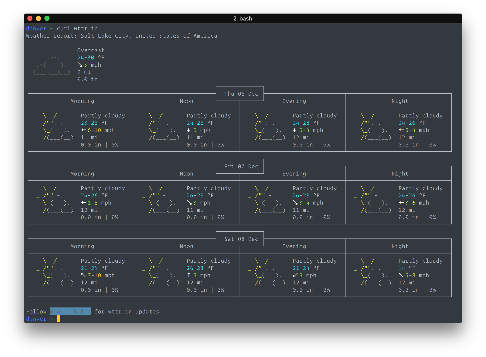
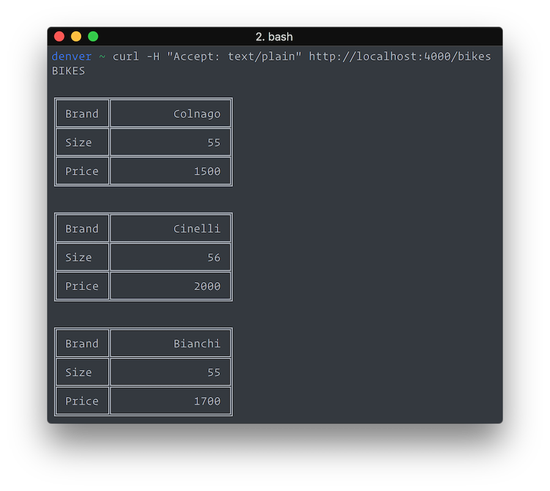

Content Negotiation & Phoenix
A quick demo exploring how HTTP content negotiation works with Phoenix.
2018-12-06
I usually try not to post about things that are specific to libraries and frameworks, but I thought this was an interesting look into how one important part of HTTP works.
Web servers mostly deal with HTML documents, but it’s also possible for a server to have multiple content types available for the same resource or page. Web servers perform a process called Content Negotiation, part of HTTP, to determine what content type to give to the client (PDF, CSV, HTML, etc.)
I set up demo application to explore how I might serve several different content types for the same resource using Phoenix. It’s worth mentioning that if your web application includes an API (JSON, for example,) you might not want to use the same url for the API and web. Every use case is different, but for an API, I would recommend keeping it separate with its own unique urls and controllers.
Use Case
There’s this really cool website for checking the weather called wttr.in. Not only is it available in the web browser, but it’s also been configured in a way that that if you curl it in the console, the server sends back a beautiful response of plain ANSI text. I looked at the source code to see how the server knows to return plain text or HTML markup, and it looks like it checks the User-Agent header on the request. It works, but I am going to demonstrate a different way of negotiating content.

Accept vs Content-Type
Accept and Content-Type are two HTTP headers that a web browser sends to a server. They are both used for communicating content type, but there is a difference. Accept is used to to tell the server what type of content it expects the response to be. Content-Type is used to let the server know what type content the request is. So, Accept is for the response, while Content-Type is for the request.
Configuring Phoenix
I will set up a page that will respond with plain text as well as HTML, depending on what the client asks for. For simplicity, the resource will just be a listing of bicycle data.
The first step to support multiple content types is to add them to the router pipeline e. If Phoenix receives an unknown mime type, then this exception is raised:
(Phoenix.NotAcceptableError) no supported media type in accept header.So, I added “text” to the browser pipeline.
pipeline :browser do
plug :accepts, ["html", "text"]
plug :fetch_session
plug :fetch_flash
plug :protect_from_forgery
plug :put_secure_browser_headers
end
If a client sends a request with _format= as a query parameter, then Phoenix will regard this format as the desired content type instead. More details can be found in the docstring for accepts (Reference.)
The controller action should also be updated. Normally, the action might have something like:
render(conn, "index.html", bikes: bikes)
However, changing "index.html" to :index will allow Phoenix to try and determine the matching template.
The final step is to add the appropriate templates. Here is what my HTML template looks like:
<h1>Listing Bikes</h1>
<table>
<thead>
<tr>
<th>Brand</th>
<th>Size</th>
<th>Price</th>
<th></th>
</tr>
</thead>
<tbody>
<%= for bike <- @bikes do %>
<tr>
<td><%= bike.brand %></td>
<td><%= bike.size %></td>
<td><%= bike.price %></td>
<td>
<%= link "Show", to: Routes.bike_path(@conn, :show, bike) %> <%= link
"Edit", to: Routes.bike_path(@conn, :edit, bike) %> <%= link "Delete",
to: Routes.bike_path(@conn, :delete, bike), method: :delete, data:
[confirm: "Are you sure?"] %>
</td>
</tr>
<% end %>
</tbody>
</table>
<span><%= link "New Bike", to: Routes.bike_path(@conn, :new) %></span>And I also added another template, called, “index.text.eex”, so that if a client really wanted the response to be in plain text, Phoenix could choose this template to return.
BIKES
<%= for bike <- @bikes do %>
╔═══════╦═════════════════╗
║ Brand ║ <%= String.pad_leading(bike.brand, 15, " ") %> ║
╠═══════╬═════════════════╣
║ Size ║ <%= String.pad_leading(Integer.to_string(bike.size), 15, " ") %> ║
╠═══════╬═════════════════╣
║ Price ║ <%= String.pad_leading(Integer.to_string(bike.price), 15, " ") %> ║
╚═══════╩═════════════════╝
<% end %>
That’s pretty much it, here’s an example of what the text format looks like in my console. Hitting http://localhost:4000/bikes from the browser returns a normal HTML list version as you would expect (I’m not going to post a screen shot of that one.)
